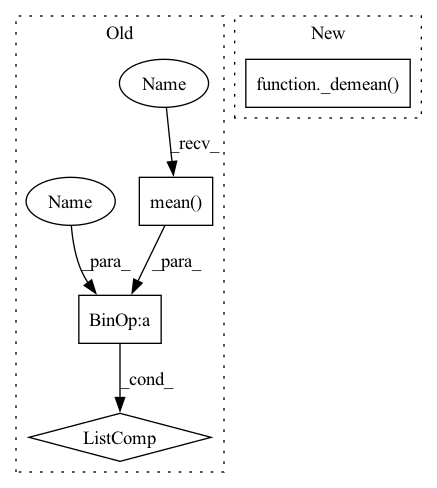

Pattern ID :37279
Before Change
def loss(self, *z):
m = z[0].size(0)
z = [z_ - z_.mean(dim=0).unsqueeze(dim=0) for z_ in z]
covs = [
(1 - self.r) * (1.0 / (m - 1)) * z_.T @ z_
+ self.r * torch.eye(z_.size(1), device=z_.device)
for z_ in zAfter Change
def loss(self, *views):
m = views[0].size(0)
views = _demean( *views)
covs = [
(1 - self.r) * view.T @ view
+ self.r * torch.eye(view.size(1), device=view.device)
for view in viewsIn pattern: SUPERPATTERN
Frequency: 3
Non-data size: 4
Instances Fragment ID: 107361014
Project Name: jameschapman19/cca_zoo
Commit Name: 70a598b571178bd0dbd9aa54d97fad2b12807145
Time: 2021-12-14
Author: james.chapman.19@ucl.ac.uk
File Name: cca_zoo/deepmodels/objectives.py
M Class Name: TCCA
N Class Name: TCCA
M Method Name: loss(1)
N Method Name: loss(1)
M Parent Class:
N Parent Class:
M File Name: cca_zoo/deepmodels/objectives.py
N File Name: cca_zoo/deepmodels/objectives.py
M Start Line: 209
M End Line: 235
N Start Line: 205
N End Line: 235
Before Change
def loss(self, *views):
// https: // www.uta.edu / math / _docs / preprint / 2014 / rep2014_04.pdf
// H is n_views * n_samples * k
all_views = [view - view.mean(dim=0) for view in views]
eigen_views = [view @ torch.inverse(_minimal_regularisation(view.T @ view, self.eps)) @ view.T for view in
all_views]
After Change
def loss(self, *views):
// https: // www.uta.edu / math / _docs / preprint / 2014 / rep2014_04.pdf
// H is n_views * n_samples * k
views = _demean( *views)
eigen_views = [view @ torch.inverse(_minimal_regularisation(view.T @ view, self.eps)) @ view.T for view in
views]
Fragment ID: 107361013
Project Name: jameschapman19/cca_zoo
Commit Name: 109657aa0c08d40d8571bc16e653094cb6206408
Time: 2021-07-14
Author: james.chapman.19@ucl.ac.uk
File Name: cca_zoo/deepmodels/objectives.py
M Class Name: GCCA
N Class Name: GCCA
M Method Name: loss(1)
N Method Name: loss(1)
M Parent Class:
N Parent Class:
M File Name: cca_zoo/deepmodels/objectives.py
N File Name: cca_zoo/deepmodels/objectives.py
M Start Line: 97
M End Line: 100
N Start Line: 100
N End Line: 102
Before Change
// H is n_views * n_samples * k
// Subtract the mean from each output
views = [view - view.mean(dim=0) for view in views]
// Concatenate all views and from this get the cross-covariance matrix
all_views = torch.cat(views, dim=1)
C = torch.matmul(all_views.T, all_views)After Change
def loss(self, *views):
// Subtract the mean from each output
views = _demean( *views)
// Concatenate all views and from this get the cross-covariance matrix
all_views = torch.cat(views, dim=1)
C = all_views.T @ all_views Fragment ID: 107361016
Project Name: jameschapman19/cca_zoo
Commit Name: 109657aa0c08d40d8571bc16e653094cb6206408
Time: 2021-07-14
Author: james.chapman.19@ucl.ac.uk
File Name: cca_zoo/deepmodels/objectives.py
M Class Name: MCCA
N Class Name: MCCA
M Method Name: loss(1)
N Method Name: loss(1)
M Parent Class:
N Parent Class:
M File Name: cca_zoo/deepmodels/objectives.py
N File Name: cca_zoo/deepmodels/objectives.py
M Start Line: 47
M End Line: 63
N Start Line: 48
N End Line: 66